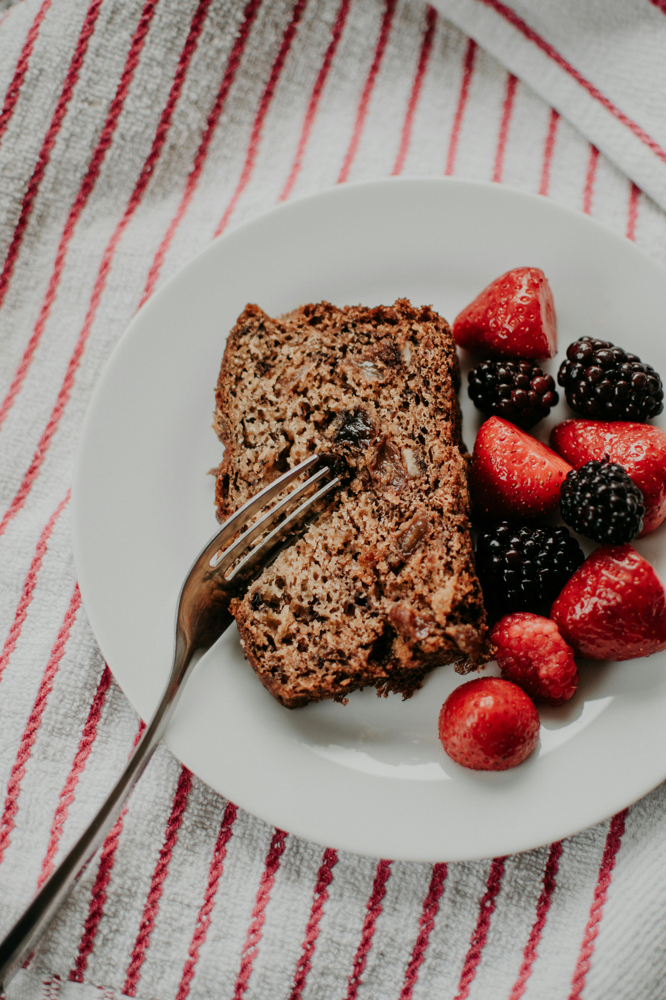

Homepage
Banana Bread

Description
The chunkiest, gooiest, most unpredictable banana bread you could possibly choose to make.
Bake at your own risk. Best damn childhood addiction you can catch.
Ingredients
Wet Ingredients
-
1/2 cup butter: 113 grams
-
1.5 cup sugar: 300 grams
-
2 eggs: approximately 100 grams (assuming large eggs, each egg is about 50 grams)
Dry Ingredients:
-
2 cups flour: 240 grams
-
1/4 tsp baking powder: 1 gram
-
3/4 tsp baking soda: 3 grams
-
1 tsp salt: 5 grams
Extra Ingredients:
-
1/4 cup yogurt: 60 grams
-
3 bananas, mashed: approximately 340 grams (varies depending on the size of the bananas)
-
1/2 cup nuts: 60 grams (varies depending on the type of nuts)
-
1/2 cup chocolate chips: 90 grams
-
1/2 cup coconut shavings: 40 grams (can vary based on the type of coconut shavings)
Instructions
- Grease pan and preheat oven.
- Cream butter, sugar, and eggs together in a bowl.
- In a separate bowl shift all the dry stuff.
- Then combine the wet and dry and all the extra into one mass
- Bake for 35 min to 1 hour. Time varies do to nonsense.
Notes:
Check if done with spaghetti noodle. It may take longer than you think.
Nutrition:
fuck off